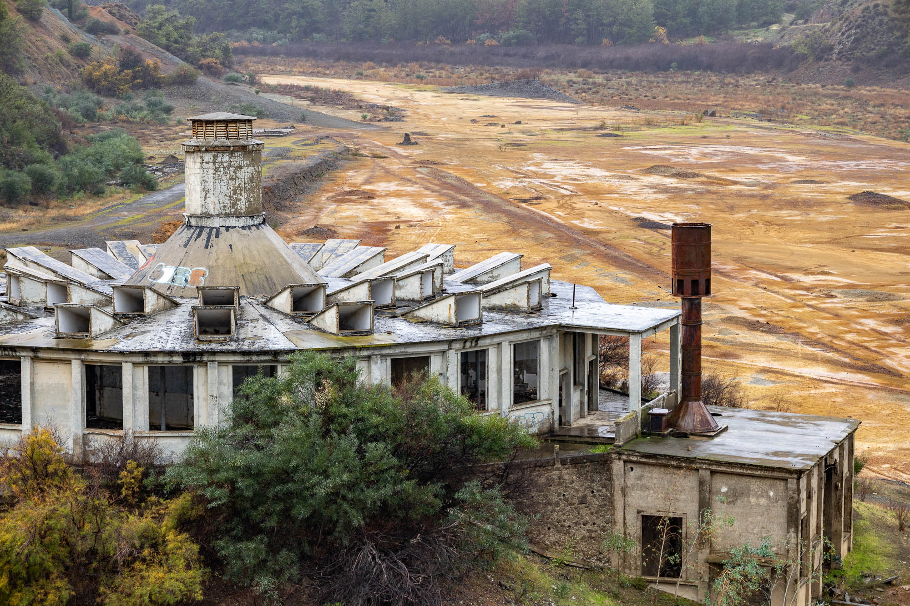
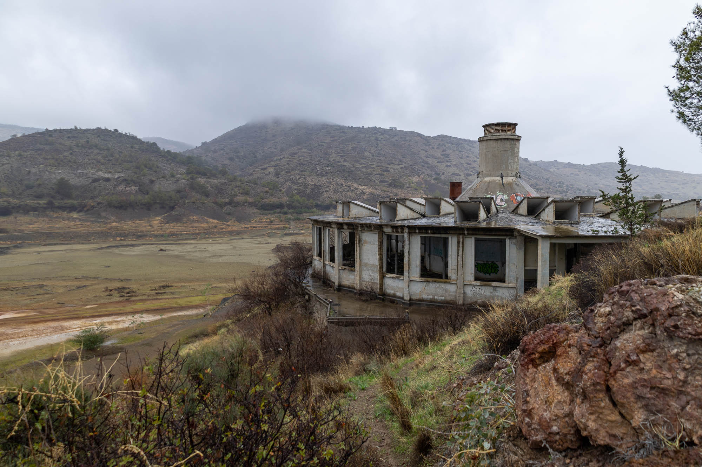
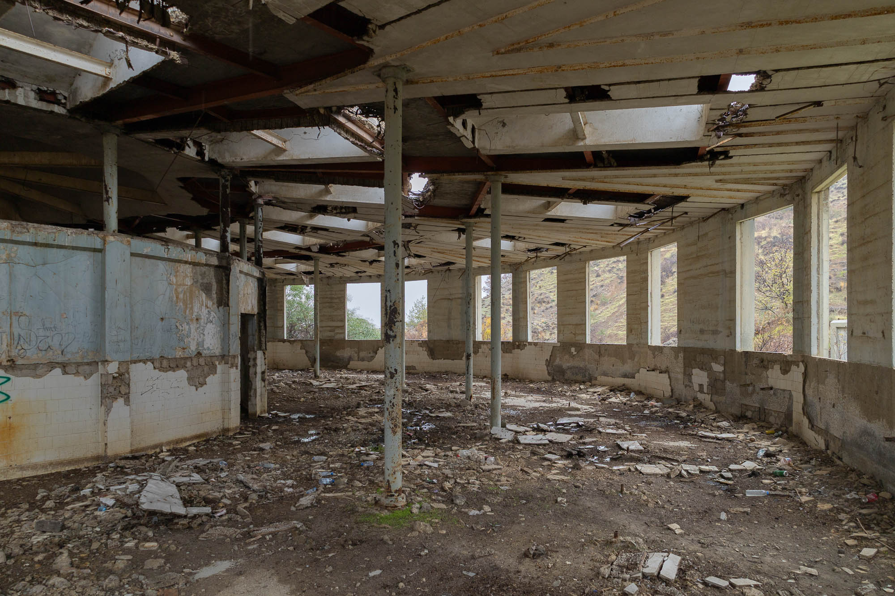
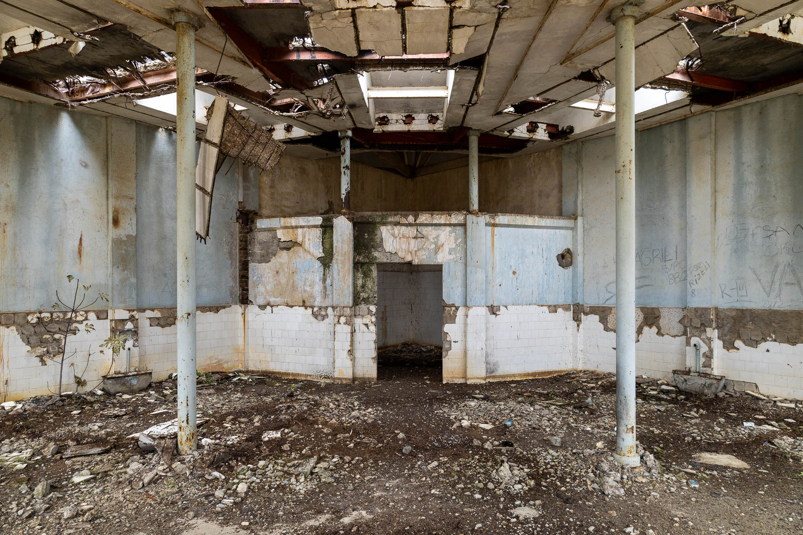
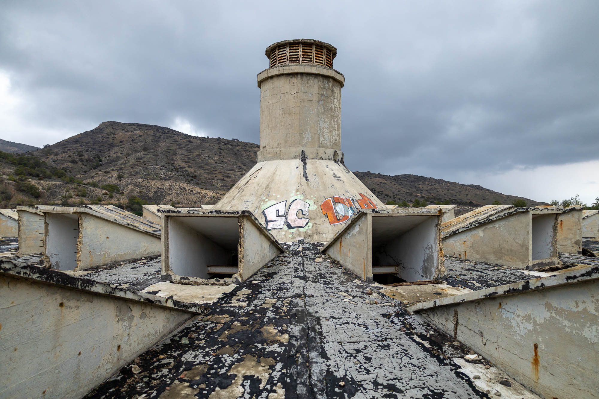
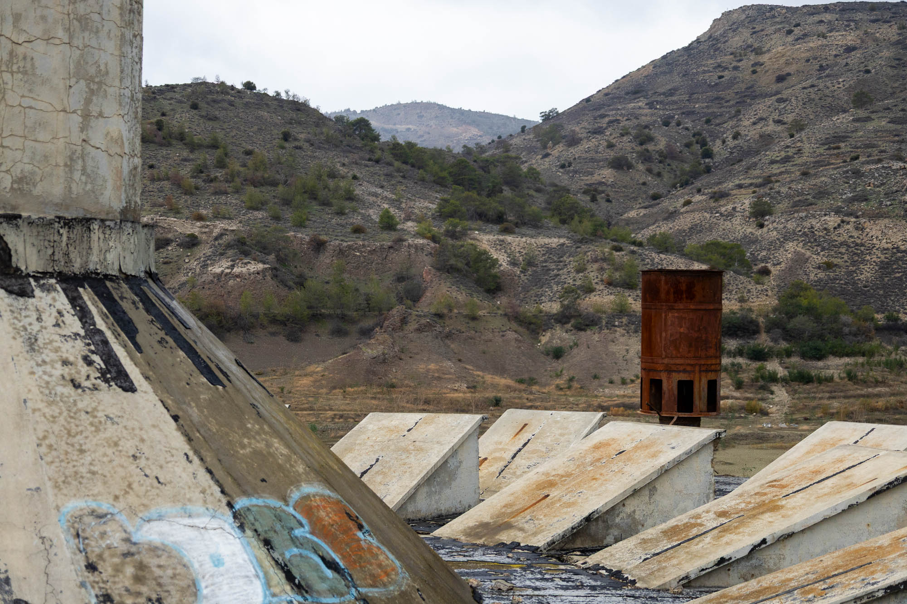
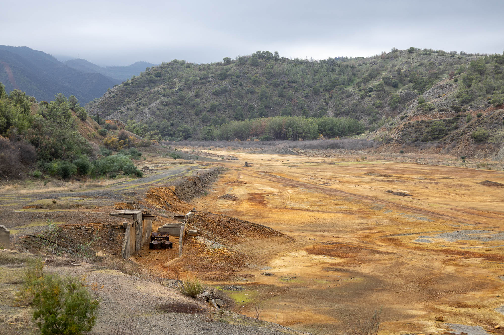
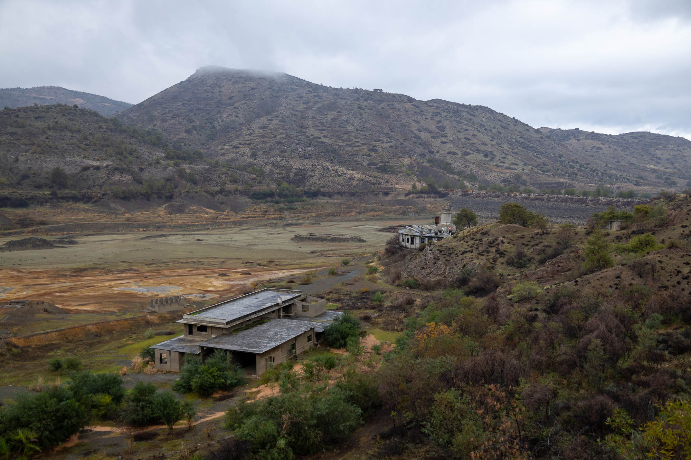

Deep within the mountains and valleys of Cyprus are the remains of the country's mining history. With a little research one can uncover a network of dark tunnels, toxic lakes, and abandoned infrastructure scattered throughout the Troodos Mountains. This explore takes me to a brutalist bathhouse built by an American company which operated copper mines in this area.


Set against a toxic backdrop of red and orange mining tailings, this circular building was once a communal bathhouse and pumphouse built for the miners of the area.
To prevent workers from bringing copper dust and other heavy metals back into their homes, miners would enter the bathhouse and bathe before leaving the site. The angular panels on the roof were likely designed for passive ventilation, helping to regulate the interior temperature by allowing rising heat and moisture to escape.


During its 1950s peak, mining dominated the Cypriot economy, generating over 25% of the island’s annual revenue. However, this ended abruptly with the 1974 Turkish military occupation, leading to the collapsed of the mining industry.
The "Green Line" border zone, created as part of the ceasefire, physically severed the connection between southern mines, this building, and northern coastal ports. Shuttered mines, mass unemployment in mining regions, and a transition to tourism and services meant that a lot of mining infrastructure was abruptly forgotten.


Even under overcast skies, the view from the bathhouse roof remains great. The view stretches up the valley, past the local cemetery to the mountain’s base, then sweeps across the foot hills and toxic lake toward the dam wall. From the right vantage point in the hills above, you can even see the ocean in the distance.
For an island that isn't that big, there sure is a lot of forgotten space, left to its own to decay with the passing of time.

